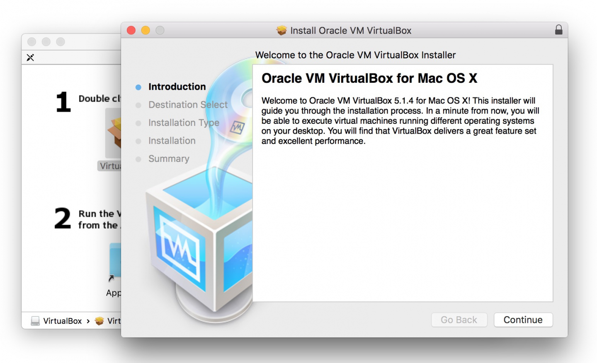
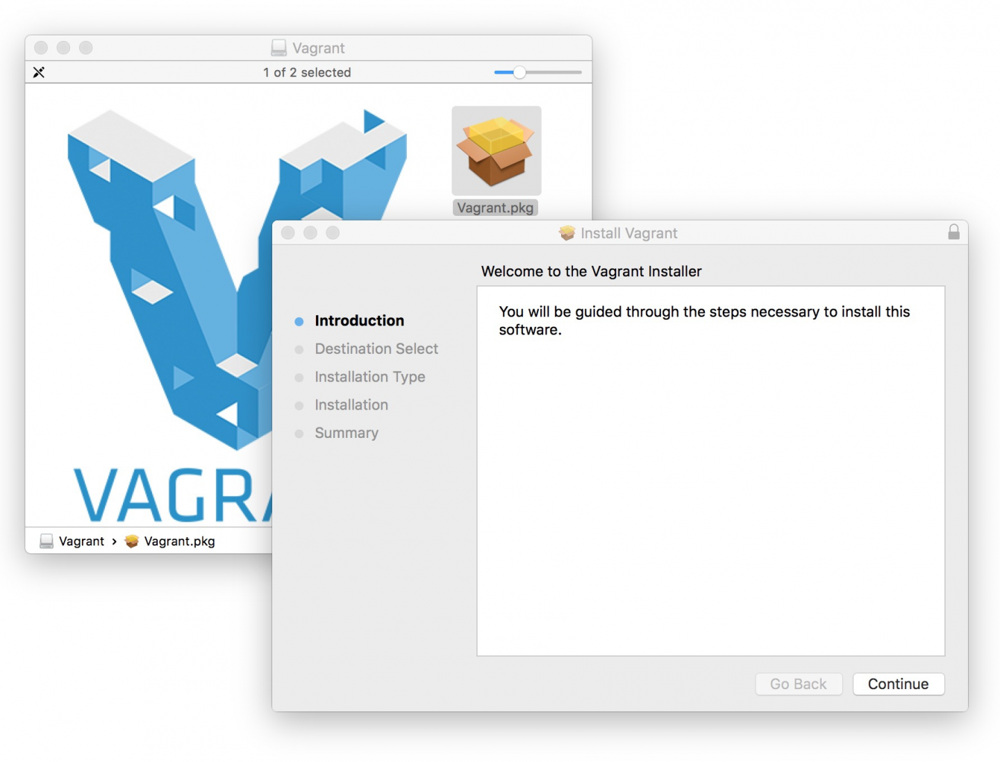
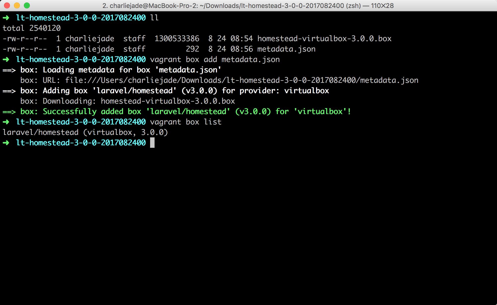
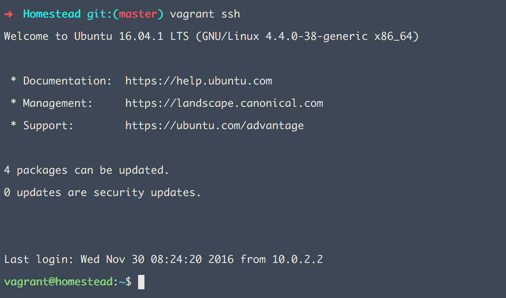

2.4. 开发环境搭建 - MacOS
系统要求
苹果 Mac OS X Yosemite 及以上；
步骤简略
接下来让我们按照这几个步骤来完成整个 Laravel 开发环境的安装及配置：
- 安装 VirtualBox
- 安装 Vagrant
- 导入 Homestead Box 虚拟机盒子
- 安装 Git
- 安装 Homestead 管理脚本
- 配置
Homestead.yaml文件 - 启动 Homestead 虚拟机
安装 VirtualBox
VirtualBox 是 Oracle 公司的开源虚拟机软件。VirtualBox 号称是最强的免费虚拟机软件，它不仅功能齐全，而且性能也很优异！VirtualBox 支持大部分流行的系统，如：Mac, Windows, Linux 等。
本书撰写时最新的 VirtualBox 版本为 5.1.14，也是本书教程使用的版本，如果你安装的是之后更新的 VirtualBox，那也不会有太大问题，因为软件更新时一般都会对之前的版本进行兼容处理。但我还是建议你使用与我相同的 VirtualBox 版本，以免有歧义，你可以使用迅雷下载 这个链接 或者使用 百度盘下载。
注意：如果你安装 VirtualBox 5.1.14 版遇到问题的话，可以到 VirtualBox 官网 下载当前操作系统相对应的安装包进行尝试。
下载完成之后，双击安装包进行安装。

之后按照提示操作一步一步进行安装即可。
安装 Vagrant
Vagrant 是用来管理虚拟机的工具，支持当前主流的虚拟机系统如 VirtualBox、VMware、AWS 等。Vagrant 的主要作用是提供一个可配置、可移植和复用的软件环境。Vagrant 让你通过编写一个 Vagrantfile 文件来控制虚拟机的启动、虚拟机网络环境的配置、虚拟机与主机间的文件共享，以及启动后自动执行一些配置脚本，如自动执行一个 Shell Script 来安装一些必备的开发工具，如安装配置MySQL、PHP，甚至是自动配置 Nginx 站点。这意味着，在一个多人开发的项目中，你只需要同步 Vagrantfile 文件，就可以保证参与项目的每个人各自的机器上拥有一致的开发环境。
本书撰写时最新的 Vagrant 版本为 1.9.0，也是本书教程使用的版本。同样的，我也建议你安装与本书相同的 Vagrant 版本，1.9.0 版本的 Vagrant 可以使用 迅雷下载链接 或者 百度盘下载。
注意：如果安装 1.9.0 版本的 Vagrant 出现问题的话，可在 Vagrant 官网 下载当前操作系统相对应最新的安装包进行尝试。
然后一步一步按照默认安装即可。

Homestead 介绍
Homestead 利用 Vagrantfile 提供的便利，定制了一整套的可配置、可移植和复用的 Laravel 开发环境。Homestead 虚拟机里面包含了 Nginx Web 服务器、PHP 7.0、MySQL、Postgres、Redis、Memcached、Node，以及所有你在使用 Laravel 开发时需要用到的各种软件。
Homestead 包含了两个东西：
- Homestead 管理脚本；
- Homestead Box 虚拟机盒子。
接下来独自说明下。
1. Homestead 管理脚本
Homestead 脚本使用 Ruby 和 Shell 脚本编写而成。原理是对 Vagrantfile 文件做定制。将从 ~/Homestead/Homestead.yaml 读取的配置信息，在 provision 时，解析为 Vagrant 命令并进行对虚拟机的配置。Homestead 脚本的作用在于，提供了极其简单易用的接口，使我们只需要通过傻瓜化配置，即可完成复杂的任务。以下是几个常用的任务：
- IP 配置，端口映射；
- Nginx Site 创建；
- 数据库创建；
- 主机文件夹挂载到虚拟机等任务。
所有 Homestead 的版本历史在 此处 可以找到。在本书中，为了提高操作的效率，我们将会使用定制版本的 Homestead。
2. Homestead Box 虚拟机盒子
homestead.box 虚拟机盒子是提前打包好的 Vagrant Box 虚拟机盒子，里面预装了 Nginx Web 服务器、PHP 7.0、MySQL、Postgres、Redis、Memcached、Node，以及所有你在使用 Laravel 开发时所需要用到的各种软件。
所有虚拟机盒子版本历史 在此。
打不开的用户，下图是截屏：

可以看出 Homestead Box 虚拟机盒子有很多版本。不过，如 Homestead 脚本，为了学习的流畅性，我们接下来将会使用定制版本的虚拟机盒子，你不需要太担心版本的事情。
安装和使用 Homestead
接下来，我们会讲解：
- 下载和导入 Homestead Box 虚拟机盒子；
- 安装 Git ，为下载 Homestead 管理脚本做准备；
- 使用 Git 下载 Homestead 管理脚本；
1. 下载和导入 Homestead Box
由于国内的网络环境原因，我们特意为大家定制了适用于国情的 Homestead 安装包，该安装包提供了以下内容：
- Composer 加速，配置了 Composer 中国全量镜像 支持；
- 默认集成 Heroku 工具；
- 默认集成 Yarn，并为 Yarn 加了淘宝镜像的加速；
- 使用 CNPM 对 NPM 进行加速。
接下来让我们开始进行 Homestead 的安装，首先我们需要下载 Homestead 虚拟机盒子，建议大家使用迅雷离线下载或者其他离线下载方式下载此盒子。
下载后的文件为 lt-homestead-3-0-0-2017082400.zip，请对其进行 zip 解压操作，解压成功后可以看到目录 lt-homestead-3-0-0-2017082400，此目录下包含两个文件：
- homestead-virtualbox-3.0.0.box（教程定制化过的 Homestead 盒子）
- metadata.json（盒子的导入配置文件）
在解压目录中 lt-homestead-3-0-0-2017082400 运行以下命令导入 Box：
> vagrant box add metadata.json注意：请必须解压到 非中文路径，有同学反馈中文路径会出现不可预知问题。
如下图所示：

至此完成 Homestead Vagrant 盒子的导入。
注：导入成功后，
lt-homestead-3-0-0-2017082400文件夹可任意删除。
2. 安装 Git
现在我们需要安装 Git ，为下载 Homestead 管理脚本做准备。在 Mac OS X 下，我们可以通过安装 Xcode 命令行来快速安装 Git：
> xcode-select --install安装成功后使用以下命令来检测是否安装成功：
> git --version
git version 2.9.3 (Apple Git-75)注：不需要担心你的版本与我不同。
3. 下载 Homestead 管理脚本
因国内网络限制，为方便下载和后续管理脚本的流畅使用，本书中将使用定制版本的 Homestead 脚本，定制版有以下优势：
- 从国内 coding.net 网站下载，下载速度会比 官方 更快；
- 对脚本进行修改，移除了每一次
provision时composer self-update的卡顿。
接下来，使用 Git 下载定制版的 Homestead：
> cd ~
> git clone https://git.coding.net/summerblue/homestead.git Homestead注：我们把 Homestead 放在
~/Homestead路径下，为方便后面的讲解，请保持一致。
完成之后我们需要进入 Homestead 目录，使用 Git 检出我们需要的 Homestead 版本：
> cd ~/Homestead
> git checkout v5.4.0注：为了保证后续讲解的流畅性，请注意版本的一致性，这里我们使用
v5.4.0。
接下来我们需要初始化 Homestead：
> bash init.sh运行以上命令后，会在 ~/Homestead 目录下生成以下三个文件：
- Homestead.yaml - 主要配置信息文件，我们可以在此文件中配置 Homestead 的站点和数据库等信息；
- after.sh - 每一次 Homestead 盒子重置后（provision）会调用的 shell 脚本文件；
- aliases - 每一次 Homestead 盒子重置后（provision），会被替换至虚拟机的
~/.bash_aliases文件中，aliases里可以放一些快捷命令的定义。
接下来我们将会对 Homestead.yaml 文件的各项配置信息进行详细讲解。
Homestead.yaml 配置文件
首先打开文件。如果你安装了 Atom，可通过运行下面命令快速打开 Homestead.yaml 文件：
> atom ~/Homestead/Homestead.yaml为了行文方便，后面如果没有提示的话，
Homestead.yaml指的是~/Homestead/Homestead.yaml文件。
Homestead.yaml里的配置大致可以分为以下几种：
- 虚拟机设置；
- SSH 秘钥登录配置；
- 共享文件夹配置；
- 站点配置；
- 数据库配置；
- 自定义变量；
接下来我们逐个讲解。
1. 虚拟机设置
Homestead 支持我们对虚拟机的 IP，内存，CPU，虚拟机的默认提供者进行配置。这里我们基本不需要做任何配置，因此可以跳过。
ip: "192.168.10.10"
memory: 2048
cpus: 1
provider: virtualbox2. SSH 秘钥登录配置
authorize 选项是指派登录虚拟机授权连接的公钥文件，此文件填写的是主机上的公钥文件地址，虚拟机初始化时，此文件里的内容会被复制存储到虚拟机的 /home/vagrant/.ssh/authorized_keys文件中，从而实现 SSH 免密码登录。在这里我们默认填写即可。
authorize: ~/.ssh/id_rsa.pubkeys 是数组选项，填写的是本机的 SSH 私钥文件地址。虚拟机初始化时，会将此处填写的所有 SSH 私钥文件复制到虚拟机的 /home/vagrant/.ssh/ 文件夹中，从而使虚拟机能共享主机上的 SSH 私钥文件，使虚拟机具备等同于主机的身份认证。此功能为 SSH 授权提供了便利，例如在后面章节中，我们只需要在 GitHub 上配置一个 SSH 公钥，即可实现 GitHub 对虚拟机和主机共同认证。
此处我们将公钥和私钥一起同步到虚拟机中：
keys:
- ~/.ssh/id_rsa
- ~/.ssh/id_rsa.pub接下来我们来生成 SSH Key，开始之前，我们先使用以下命令来检查主机上是否已经生成过 SSH Key：
> ls -al ~/.ssh如果存在 id_rsa 和 id_rsa.pub的话，请跳过以下生成 SSH 的步骤继续阅读剩下内容。
否则使用以下方法来生成 SSH Key，请将 your_email@example.com 替换为你的邮箱：
> ssh-keygen -t rsa -C "your_email@example.com"
Generating public/private rsa key pair.命令行会提示让你指定秘钥的名称，按回车键将 SSH Key 保存到默认文件名即可：
Enter a file in which to save the key (/Users/you/.ssh/id_rsa): [Press enter]接下来会询问你为 SSH Key 设置密码，按回车键即可，默认为空密码：
Enter passphrase (empty for no passphrase): [Type a passphrase]
Enter same passphrase again: [Type passphrase again]可以都选择默认，也就是直接敲击几个 Enter 键即可。这时候我们再检查一下：
> ls -al ~/.ssh可以看到以下两个文件：
id_rsa—— SSH 秘钥的 私钥 (Private Key)id_rsa.pub—— SSH 秘钥的 公钥 (Public Key)
3. 共享文件夹配置
我们可以通过 folders 来指明本机要映射到 Homestead 虚拟机上的文件夹。
map对应的是我们本机的文件夹to对应的是 Homestead 上的文件夹。
为了后续课程讲解，请统一配置如下：
folders:
- map: ~/Code
to: /home/vagrant/Code默认 Homestead 会将我们本机的 ~/Code 文件夹映射到 /home/vagrant/Code 文件夹上。现在我们本机还没有 ~/Code 文件夹，让我们来创建一个：
> cd ~
> mkdir Code在后面的章节中，我们将会在该文件夹下放置我们所有的 Laravel 项目，Homestead 会把该文件夹下的项目自动映射到虚拟机的 /home/vagrant/Code 文件夹上。
4. 站点配置
站点配置允许你在主机里，通过域名来访问虚拟机里的 Laravel 应用。如下面 sites 配置所示，将 homestead.test 映射到一个 Laravel 项目的 public 目录上。这一行配置，会命令 Homestead 为我们新建一个 Nginx 站点，并且把 Web Root 配置到指定目录下。Laravel 应用的 Nginx 站点 Web Root 配置，默认就是在根目录下的 public 目录。
sites:
- map: homestead.test
to: /home/vagrant/Code/Laravel/public目前 Laravel 项目并不存在。这里先统一配置为以上，请不用着急，在后续的章节中，我们会创建该 Laravel 项目。
另外，主机里直接访问虚拟机站点，必须通过绑定 hosts 来实现。接下来我们利用 hosts 文件绑定 homestead.test 到虚拟机 IP 192.168.10.10 上。hosts 文件的完整路径为 /etc/hosts，可使用下面命令打开：
> atom /etc/hosts在 hosts 文件的最后面加入以下一行：
192.168.10.10 homestead.test至此站点就配置好了，等我们在后面章节创建 Laravel 项目后，即可通过浏览器访问 homestead.test 站点。
5. 数据库配置
我们可以为 Homestead 指定数据库名称，这里使用默认设置即可。
databases:
- homestead6. 自定义变量
最后，如果你需要自定义一些在虚拟机上可以使用的自定义变量，则可以在 variables 中进行定义。
variables:
- key: APP_ENV
value: localHomestead 自定义变量在本书中并未使用，知悉有此功能即可。
运行 Vagrant
完成了 Homestead 的配置，接下来我们要开始启动虚拟机了。
在命令中输入 vagrant，能看到 Vagrant 为我们提供了一些便利的命令行，下面简单介绍一下 Vagrant 常用的一些命令行的使用：
| 命令行 | 说明 |
|---|---|
| vagrant init | 初始化 vagrant |
| vagrant up | 启动 vagrant |
| vagrant halt | 关闭 vagrant |
| vagrant ssh | 通过 SSH 登录 vagrant（需要先启动 vagrant） |
| vagrant provision | 重新应用更改 vagrant 配置 |
| vagrant destroy | 删除 vagrant |
让我们开始启动 Homestead：
> cd ~/Homestead && vagrant up第一次启动时，Vagrant 会做以下这几件事情：
- 以导入的 Homestead 虚拟机盒子为模板，新建一台虚拟机；
- 并按照
Homestead.yaml里的配置信息，对这台新建的虚拟机进行配置； - 配置完成后启动虚拟机。
成功启动后，还是在 ~/Homestead 目录中，通过以下命令来 SSH 登录 Homestead 虚拟机中：
> vagrant ssh在我们登录成功后，你能看到类似于如下图的界面，现在我们在该终端界面中输入的所有命令都将运行在 Homestead 虚拟机上。

在虚拟机界面下可以输入退出虚拟机：
$ exit最后尝试关闭 Homestead：
> vagrant halt注意：本书中因为虚拟机的存在，我们会有两个运行命令行的环境，一个是主机，另一个是 Homestead 虚拟机。我们会在命令的前面使用『命令行提示符』来区分主机和 Homestead。请记住以
>开头的命令是运行在主机里，$开头的命令是运行在 Homestead 虚拟机里。详见 写作约定 - 命令行提示符。
FAQ
以下是环境部署的常见问题搜集，方便遇到问题的同学查阅。如果一切正常，可以跳过以下内容。